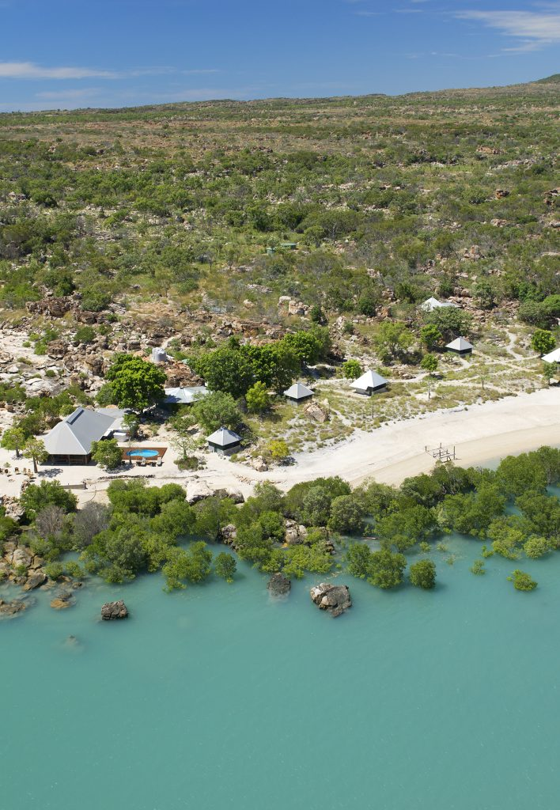

Craving a getaway? But not sure where to spend your precious weeks off work? This is the essential guide to your next holiday. To help you book the best holiday possible, we break down top Australian destinations by key weather factors so you can find the perfect spot to relax, explore, or chase the sun. Whether you're after a tropical escape, a winter wonderland, or something in between, this guide will help you match your travel dreams to the right climate.
Simply follow the guide to first find the destination with your preferred climate for the time of your trip, then explore the sunshine, rainfall, and wind conditions in specific areas of interest in greater detail below. Once you're across the conditions, you can start planning your trip. Use the flight map to decide which destinations are easiest for you to get to - that way, you can make the most of your holiday escape. So, what are you waiting for?
Let's talk details. We've kept it simple, but a quick guide to the numbers will make sense of it all, and make sure that you pick the destinations which best suit your sun-bathing or skiing dreams.
This interactive map is designed so that you can easily compare the weather conditions that matter to you and your holiday, whether that's temperature, sunshine, wind or more. First, select the weather data that you want to learn about. Then, select the season that you're planning to make your getaway, or hit play for a comparison across the years - so you can see the weather variation at your destination. Now, simply explore the map to find your ideal weather conditions.
Made a start, but need more information? Don't worry, we've got you covered. This visualisation will help you compare weather factors in a particular state. That way, you won't be blindsided when it rains every day of your tropical vacation. Simply select the state you're interested in, and use the graphs to easily understand average rainfall, average sunshine and wind gust speed across each season of the year at a glance. Use the years slider to compare different weather conditions in each year. That way, you'll have a good understanding of the factors conditions you can expect on your upcoming trip.
Picked your destination and ready to plan your trip? Just one more step left before you'll be on the holiday of a lifetime. This map will help you decide where to go based on how easy it is to fly there. That way, you won't waste half of your precious annual leave days on a plane or waiting around at the airport. So, select your local city, and use the map to see where you can fly directly to. The thicker the line, the more flights that go to that location, and the more flexibility you will have when booking your bucket-list trip.
